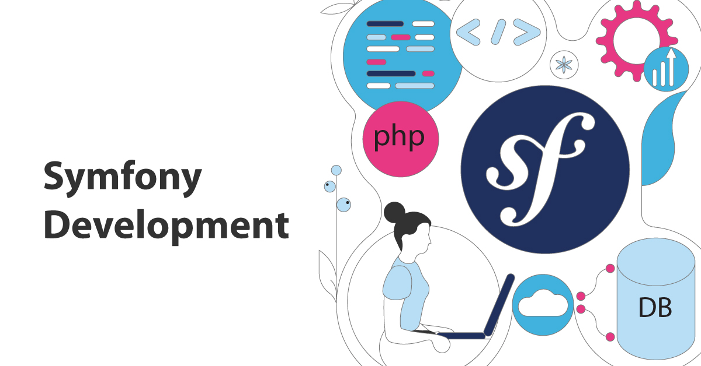
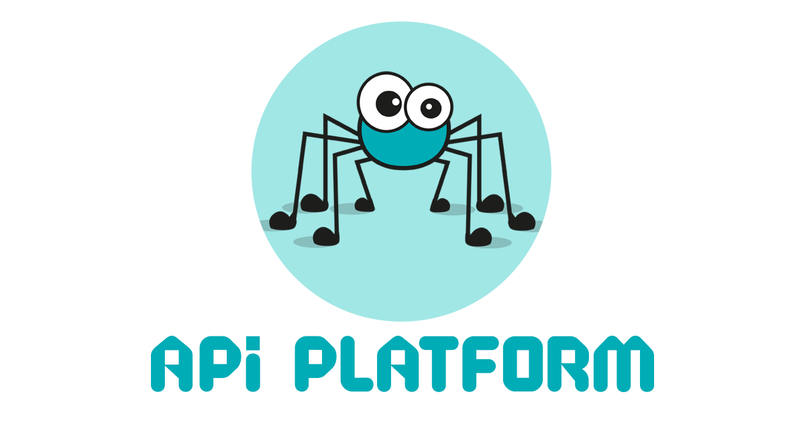

La Formation Symfony Seif FEKAIER Juste après le REACT JS je me lance enfin sur la formation Symfony qui durera entre 1 et 2 semaines car j'ai déjà eu des bases dessus. Symfony est un bon framework écrit en php qui fournit des fonctionnalités modulables et adaptables qui permettent de faciliter et d’accélérer le développement d'un site web.   Cette formation devait m'apprendre à pouvoir créer et gérer une api depuis le framework symfony c'était une chose que je n'avais pas encore en maîtrise et que j'ai voulu comprendre comment fonctionne les api avec symfony. J'ai dû faire énormement de recherche et comme la formation REACT j'ai dû montré mon avancement à mon coordinateur qui notait ma progression. Enfin au bout d'un moment j'ai pu comprendre la totalité du fonctionnement de l'api et j'ai commencé à m'entrainer avec api plateform (pour pouvoir avoir directement une api) et avec normalizer et serializer (des fonctionnalités de symfony pour créer nos propres api). Après m'être acharné sur l'apprentissage j'ai pu montré à mon coordinateur mes compétences ainsi que les codes que j'ai fais après des semaines d'apprentissage et enfin j'ai eu l'accord pour accéder au test final qui devait fusionner le REACT et symfony afin de créer une application web. Article précédent La Formation REACT JS Article suivant L'exercice final Retour Menu